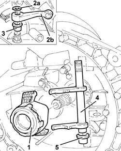
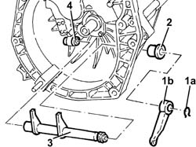

1820A26 thrust bearing linkage - r + r with gearbox removed
- Path
- Procedures > 18 CLUTCH > 1820 CLUTCH RELEASE CONTROLS > 1820A clutch release mechanical control > 1820A26 thrust bearing linkage - r + r with gearbox removed
- Kind
- repair procedure (removal / refitting; the operation number is the code)
- Applies to
- engines: 2.0 TS, 3.2 V6, 1.9 JTD 16V; all production periods
- Interactive page
- https://sloeber94.github.io/elrnDB-a147/en/#/3025106
Applies to: engines: 2.0 TS; all production periods; only with equipment: Cambio robotizzato
 Removing
Removing
 Refitting
Refitting1. Remove the thrust bearing.
2. Remove the circlip (2a) and the lever (2b).
3. Remove the outer non-slip bush.
4. Remove the clutch release linkage.
5. Remove the inner non-slip bush.

Applies to: engines: 2.0 TS; all production periods; only with equipment: Cambio robotizzato
Refitting
RemovingPlace the inner non-slip bush back in its housing.
Place the thrust bearing control linkage back in its housing.
Place the outer non-slip bush back in its housing.
Place the lever back in its housing and secure it using the circlip.
Place the thrust bearing back in its housing.
Applies to: engines: 3.2 V6; all production periods
Removing
Refitting1. Remove the circlip (1a) and the lever (1b).
2. Remove the outer non-slip bush.
3. Remove the clutch release linkage.
4. Remove the inner non-slip bush.

Applies to: engines: 3.2 V6; all production periods
Refitting
RemovingPlace the inner non-slip bush back in its housing.
Place the thrust bearing control linkage back in its housing.
Place the outer non-slip bush back in its housing.
Place the lever back in its housing and secure it using the circlip.
Applies to: engines: 1.9 JTD 16V; all production periods
Removing
Refitting1. Remove the circlip (1a) and the lever (1b).
2. Remove the outer non-slip bush.
3. Remove the clutch release linkage.
4. Remove the inner non-slip bush.
Applies to: engines: 1.9 JTD 16V; all production periods
Refitting
RemovingPlace the inner non-slip bush back in its housing.
Place the thrust bearing control linkage back in its housing.
Place the outer non-slip bush back in its housing.
Place the lever back in its housing and secure it using the circlip.